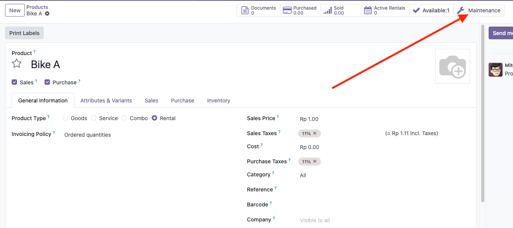
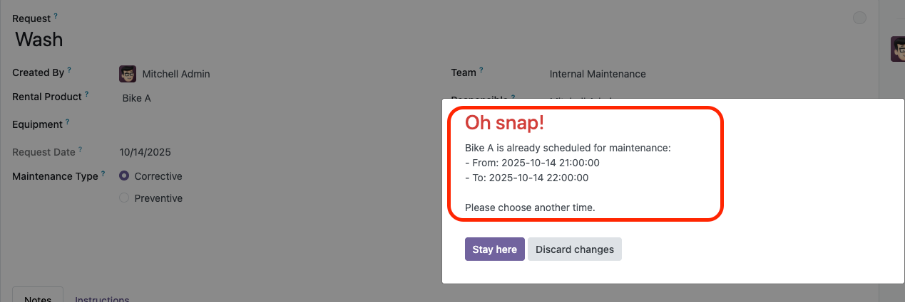
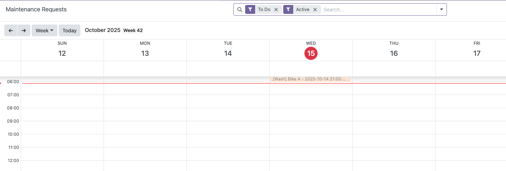

This module integrates rental products with Odoo’s built-in Maintenance app. It ensures that rental products (like bikes, vehicles, or equipment) cannot be rented while they are scheduled for maintenance. It also enhances maintenance records by displaying the rental product in the name and in calendar views.

rental_product_idname_get() to show rental product in the maintenance request name| Field | Description |
|---|---|
| rental_product_id | Rental product associated with this maintenance request |
| schedule_date | Maintenance start date and time (UTC stored) |
| duration | Estimated maintenance duration in hours |
| maintenance_end_datetime | Computed field: schedule_date + duration |
| name | Automatically shows maintenance name with rental product, e.g., Full Service (Bike A) |

When creating a maintenance request, the system prevents selecting a rental product
that already has an active maintenance scheduled.
Example: Bike A is under maintenance from 2025-10-15 08:00 to 2025-10-15 10:00.
Attempting to create another maintenance during this period will show a warning in the user's timezone.

Example displayed in calendar: